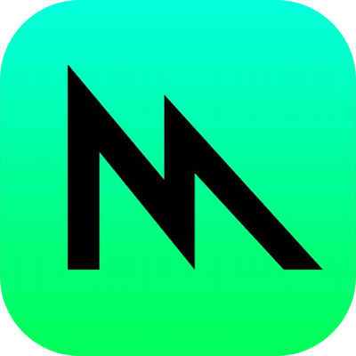

들어가기
이전 포스트인 "맥북에서 GPU를 이용해서 딥러닝 수행하기"에서는 PlaidML로 AMD GPU가 탑재된 맥북 프로에서 GPU를 딥러닝 연산을 수행하는 방법을 다루었습니다.이번에는 PlaidML의 대안으로, 맥북 프로에서 tensorflow-metal PluggableDevice를 설치하여 딥러닝 연산에 GPU를 이용하는 방법을 알아봅니다.
들어가기
메탈에 대해서
애플은 홈페이지에서 메탈을 다음과 같이 소개하고 있습니다.
“Metal은 그래픽과 컴퓨팅 프로그램 간의 긴밀한 통합이 이루어진 환경에서 풍부한 셰이딩 언어를 사용하여 최신 3D 응용 프로그램과 뛰어난 성능의 게임을 개발할 수 있도록 플랫폼에 최적화되어 있고 오버헤드가 낮은 API를 제공합니다.”1
쉽게 말하자면 메탈은 애플이 개발한 그래픽 API입니다. 그러므로 메탈은 맥에 설치된 GPU를 핸들링하는 기능이 포함됩니다. 그리고 애플은 메탈의 새로운 기능 중을 소개하고 있습니다. 그중에서 다음의 설명이 주목할만합니다.
TensorFlow용 Metal 플러그인: “TensorFlow의 PluggableDevice 인터페이스에 대한 지원이 Metal에 추가되어, macOS Monterey의 뛰어난 성능을 사용하여 학습을 시작할 수 있습니다.”2
tensorflow-metal PluggableDevice에 대해서
tensorflow-metal PluggableDevice는 맥에 설치된 GPU의 Metal API로 TensorFlow의 훈련을 가속화시킵니다. 즉, AMD GPU가 탑재된 Intel 맥북 프로에 tensorflow metal 설치하면 GPU를 사용하는 딥러닝을 수행할 수 있게 됩니다.
tensorflow-metal PluggableDevice 설치를 위한 리소스
이 글은 Erratic Generator 홈페이지의 “Install Tensorflow Metal on Intel Macbook Pro with AMD GPU”(https://erraticgenerator.com/blog/tensorflow-metal-intel-mac-gpu/)를 참고했습니다. 이 글의 저자는 PlaidML의 대체재로 tensorflow-metal PluggableDevice를 선택했습니다. 그리고 그는 애플 개발자 홈페이지의 “Getting Started with tensorflow-metal PluggableDevice” (https://developer.apple.com/metal/tensorflow-plugin/)를 참고하여 해당 프로그램을 설치하였습니다. 그는 설치 방법을 비교적 충실하고 여러 상황에 따라 친절하게 설명하고 있어서 필자의 환경에 그대로 적용하여 무난히 설치할 수 있었습니다.
tensorflow-metal PluggableDevice 설치
필자가 맥북프로는 다음처럼 AMD의 Radeon Pro 560X GPU가 탑재되어 있습니다. 이 GPU를 사용하기 위해 tensorflow와 tensorflow-metal PluggableDevice를 설치합니다.

python 설치 환경 확인
python 3.8이 Intel 기반 Mac을 지원하는 애플의 tensorflow 플러그인을 지원하는 유일한 버전이라 합니다. 그리고 conda를 사용하여 플러그인을 설치하는 방법을 찾지 못했다고 합니다. 필자도 시도해 보았지만 실패해서 Erratic Generator가 제시하는 설치 방법을 따라 설치하였습니다.
conda를 사용한다면 먼저 conda deactivate 명령어로 비활성화해야 합니다.
(base) choonghyunryu@myWorld ~ % conda deactivate
choonghyunryu@myWorld ~ % python 버전이 3.8인지 확인합니다.
$ python --version만약에 3.8 버전을 설치해야 한다면, 다음의 명령어로 설치합니다.
$ brew install python@3.8brew list --formula | grep python 명령어로 Brew를 통해 설치한 모든 python 버전을 확인할 수 있습니다.
choonghyunryu@myWorld ~ % brew list --formula | grep python
python@3.8
python@3.9
choonghyunryu@myWorld ~ % 필자의 환경에서는 3.8 버전과 3.9 버전이 설치되어 있습니다. 인텔 CPU를 탑재한 맥에서는 3.8 버전만 지원하므로 다음과 같은 작업을 차례로 수행합니다.
- brew unlink python@3.9
- brew unlink python@3.8
- brew link –force python@3.8
choonghyunryu@myWorld ~ % brew unlink python@3.9
Unlinking /usr/local/Cellar/python@3.9/3.9.9... 2818 symlinks removed.
choonghyunryu@myWorld ~ % brew unlink python@3.8
Unlinking /usr/local/Cellar/python@3.8/3.8.6_2... 1 symlinks removed.
choonghyunryu@myWorld ~ % brew link --force python@3.8
Linking /usr/local/Cellar/python@3.8/3.8.6_2... 25 symlinks created.
If you need to have this software first in your PATH instead consider running:
echo 'export PATH="/usr/local/opt/python@3.8/bin:$PATH"' >> ~/.zshrc
choonghyunryu@myWorld ~ % 그리고 버전을 확인하는 다음 두 명령어가 3.8을 반환하는지 확인합니다.
$ python --version
$ python3 --version필자의 환경에서는 python이 설치되어 있지 않은 것으로 보여, 다음과 같이 python이 실제로 호출될 수 있도록 python3의 심볼릭 링크를 생성했습니다.
choonghyunryu@myWorld 73_mashup_python % ln -s -f /usr/local/bin/python3.8 /usr/local/bin/pythonchoonghyunryu@myWorld 73_mashup_python % python --version
Python 3.8.6
choonghyunryu@myWorld 73_mashup_python % python3 --version
Python 3.8.6
choonghyunryu@myWorld 73_mashup_python % 이제 버전이 3.8로 확인됩니다.
python 가상 환경 생성
python의 가상환경은 독립된 python 환경을 생성하는 도구입니다. 버전 문제와 의존성 문제로 인해서 어플리케이션간 충돌이 발생하는 것을 방지해 줍니다. 이전 포스트에서 소개한 Anaconda도 conda 명령어를 통해서 python의 가상환경을 생성했었습니다.
tensorflow-metal이라는 이름의 python 가상환경을 생성합니다. 이 가상환경에 프로그램들을 설치할 계획입니다.
choonghyunryu@myWorld ~ % python3 -m venv ~/tensorflow-metaltensorflow 설치
생성한 가상환경을 활성화한 다음에 python 패키지의 설치를 위한 PIP를 설치합니다.
choonghyunryu@myWorld ~ % source ~/tensorflow-metal/bin/activate
(tensorflow-metal) choonghyunryu@myWorld ~ %
(tensorflow-metal) choonghyunryu@myWorld ~ % python --version
Python 3.8.6
(tensorflow-metal) choonghyunryu@myWorld ~ % python -m pip install -U pip
Collecting pip
Using cached pip-22.0.4-py3-none-any.whl (2.1 MB)
Installing collected packages: pip
Attempting uninstall: pip
Found existing installation: pip 20.2.1
Uninstalling pip-20.2.1:
Successfully uninstalled pip-20.2.1
Successfully installed pip-22.0.4
(tensorflow-metal) choonghyunryu@myWorld ~ % python -m pip install tensorflow-macos 명령어로 tensorflow를 설치합니다.
(tensorflow-metal) choonghyunryu@myWorld ~ % python -m pip install tensorflow-macos
Collecting tensorflow-macos
Downloading tensorflow_macos-2.8.0-cp38-cp38-macosx_11_0_x86_64.whl (218.9 MB)
━━━━━━━━━━━━━━━━━━━━━━━━━━━━━━━━━━━━━━━━ 218.9/218.9 MB 11.0 MB/s eta 0:00:00
Collecting termcolor>=1.1.0
Using cached termcolor-1.1.0-py3-none-any.whl
Collecting numpy>=1.20
Downloading numpy-1.22.3-cp38-cp38-macosx_10_14_x86_64.whl (17.6 MB)
━━━━━━━━━━━━━━━━━━━━━━━━━━━━━━━━━━━━━━━━ 17.6/17.6 MB 30.9 MB/s eta 0:00:00
Collecting wrapt>=1.11.0
Downloading wrapt-1.14.0-cp38-cp38-macosx_10_9_x86_64.whl (35 kB)
Collecting libclang>=9.0.1
Downloading libclang-13.0.0-py2.py3-none-macosx_10_9_x86_64.whl (13.0 MB)
━━━━━━━━━━━━━━━━━━━━━━━━━━━━━━━━━━━━━━━━ 13.0/13.0 MB 39.6 MB/s eta 0:00:00
Collecting six>=1.12.0
Downloading six-1.16.0-py2.py3-none-any.whl (11 kB)
Collecting h5py>=2.9.0
Downloading h5py-3.6.0-cp38-cp38-macosx_10_9_x86_64.whl (3.1 MB)
━━━━━━━━━━━━━━━━━━━━━━━━━━━━━━━━━━━━━━━━ 3.1/3.1 MB 31.7 MB/s eta 0:00:00
Collecting tensorboard<2.9,>=2.8
Downloading tensorboard-2.8.0-py3-none-any.whl (5.8 MB)
━━━━━━━━━━━━━━━━━━━━━━━━━━━━━━━━━━━━━━━━ 5.8/5.8 MB 43.1 MB/s eta 0:00:00
Collecting gast>=0.2.1
Downloading gast-0.5.3-py3-none-any.whl (19 kB)
Collecting tf-estimator-nightly==2.8.0.dev2021122109
Downloading tf_estimator_nightly-2.8.0.dev2021122109-py2.py3-none-any.whl (462 kB)
━━━━━━━━━━━━━━━━━━━━━━━━━━━━━━━━━━━━━━━━ 462.5/462.5 KB 14.0 MB/s eta 0:00:00
Collecting keras-preprocessing>=1.1.1
Using cached Keras_Preprocessing-1.1.2-py2.py3-none-any.whl (42 kB)
Collecting grpcio<2.0,>=1.24.3
Downloading grpcio-1.44.0-cp38-cp38-macosx_10_10_x86_64.whl (4.3 MB)
━━━━━━━━━━━━━━━━━━━━━━━━━━━━━━━━━━━━━━━━ 4.3/4.3 MB 40.2 MB/s eta 0:00:00
Requirement already satisfied: setuptools in ./tensorflow-metal/lib/python3.8/site-packages (from tensorflow-macos) (49.2.1)
Collecting typing-extensions>=3.6.6
Downloading typing_extensions-4.1.1-py3-none-any.whl (26 kB)
Collecting absl-py>=0.4.0
Downloading absl_py-1.0.0-py3-none-any.whl (126 kB)
━━━━━━━━━━━━━━━━━━━━━━━━━━━━━━━━━━━━━━━━ 126.7/126.7 KB 4.5 MB/s eta 0:00:00
Collecting astunparse>=1.6.0
Using cached astunparse-1.6.3-py2.py3-none-any.whl (12 kB)
Collecting keras<2.9,>=2.8.0rc0
Downloading keras-2.8.0-py2.py3-none-any.whl (1.4 MB)
━━━━━━━━━━━━━━━━━━━━━━━━━━━━━━━━━━━━━━━━ 1.4/1.4 MB 27.7 MB/s eta 0:00:00
Collecting google-pasta>=0.1.1
Using cached google_pasta-0.2.0-py3-none-any.whl (57 kB)
Collecting flatbuffers>=1.12
Downloading flatbuffers-2.0-py2.py3-none-any.whl (26 kB)
Collecting protobuf>=3.9.2
Downloading protobuf-3.19.4-cp38-cp38-macosx_10_9_x86_64.whl (961 kB)
━━━━━━━━━━━━━━━━━━━━━━━━━━━━━━━━━━━━━━━━ 961.7/961.7 KB 18.9 MB/s eta 0:00:00
Collecting opt-einsum>=2.3.2
Using cached opt_einsum-3.3.0-py3-none-any.whl (65 kB)
Collecting wheel<1.0,>=0.23.0
Downloading wheel-0.37.1-py2.py3-none-any.whl (35 kB)
Collecting google-auth<3,>=1.6.3
Downloading google_auth-2.6.2-py2.py3-none-any.whl (156 kB)
━━━━━━━━━━━━━━━━━━━━━━━━━━━━━━━━━━━━━━━━ 156.5/156.5 KB 5.1 MB/s eta 0:00:00
Collecting tensorboard-data-server<0.7.0,>=0.6.0
Downloading tensorboard_data_server-0.6.1-py3-none-macosx_10_9_x86_64.whl (3.5 MB)
━━━━━━━━━━━━━━━━━━━━━━━━━━━━━━━━━━━━━━━━ 3.5/3.5 MB 38.4 MB/s eta 0:00:00
Collecting google-auth-oauthlib<0.5,>=0.4.1
Downloading google_auth_oauthlib-0.4.6-py2.py3-none-any.whl (18 kB)
Collecting requests<3,>=2.21.0
Downloading requests-2.27.1-py2.py3-none-any.whl (63 kB)
━━━━━━━━━━━━━━━━━━━━━━━━━━━━━━━━━━━━━━━━ 63.1/63.1 KB 2.0 MB/s eta 0:00:00
Collecting tensorboard-plugin-wit>=1.6.0
Downloading tensorboard_plugin_wit-1.8.1-py3-none-any.whl (781 kB)
━━━━━━━━━━━━━━━━━━━━━━━━━━━━━━━━━━━━━━━━ 781.3/781.3 KB 21.3 MB/s eta 0:00:00
Collecting werkzeug>=0.11.15
Downloading Werkzeug-2.1.0-py3-none-any.whl (224 kB)
━━━━━━━━━━━━━━━━━━━━━━━━━━━━━━━━━━━━━━━━ 224.6/224.6 KB 8.0 MB/s eta 0:00:00
Collecting markdown>=2.6.8
Downloading Markdown-3.3.6-py3-none-any.whl (97 kB)
━━━━━━━━━━━━━━━━━━━━━━━━━━━━━━━━━━━━━━━━ 97.8/97.8 KB 3.4 MB/s eta 0:00:00
Collecting rsa<5,>=3.1.4
Downloading rsa-4.8-py3-none-any.whl (39 kB)
Collecting cachetools<6.0,>=2.0.0
Downloading cachetools-5.0.0-py3-none-any.whl (9.1 kB)
Collecting pyasn1-modules>=0.2.1
Using cached pyasn1_modules-0.2.8-py2.py3-none-any.whl (155 kB)
Collecting requests-oauthlib>=0.7.0
Downloading requests_oauthlib-1.3.1-py2.py3-none-any.whl (23 kB)
Collecting importlib-metadata>=4.4
Downloading importlib_metadata-4.11.3-py3-none-any.whl (18 kB)
Collecting idna<4,>=2.5
Downloading idna-3.3-py3-none-any.whl (61 kB)
━━━━━━━━━━━━━━━━━━━━━━━━━━━━━━━━━━━━━━━━ 61.2/61.2 KB 2.1 MB/s eta 0:00:00
Collecting charset-normalizer~=2.0.0
Downloading charset_normalizer-2.0.12-py3-none-any.whl (39 kB)
Collecting urllib3<1.27,>=1.21.1
Downloading urllib3-1.26.9-py2.py3-none-any.whl (138 kB)
━━━━━━━━━━━━━━━━━━━━━━━━━━━━━━━━━━━━━━━━ 139.0/139.0 KB 4.9 MB/s eta 0:00:00
Collecting certifi>=2017.4.17
Downloading certifi-2021.10.8-py2.py3-none-any.whl (149 kB)
━━━━━━━━━━━━━━━━━━━━━━━━━━━━━━━━━━━━━━━━ 149.2/149.2 KB 5.4 MB/s eta 0:00:00
Collecting zipp>=0.5
Downloading zipp-3.7.0-py3-none-any.whl (5.3 kB)
Collecting pyasn1<0.5.0,>=0.4.6
Using cached pyasn1-0.4.8-py2.py3-none-any.whl (77 kB)
Collecting oauthlib>=3.0.0
Downloading oauthlib-3.2.0-py3-none-any.whl (151 kB)
━━━━━━━━━━━━━━━━━━━━━━━━━━━━━━━━━━━━━━━━ 151.5/151.5 KB 5.5 MB/s eta 0:00:00
Installing collected packages: tf-estimator-nightly, termcolor, tensorboard-plugin-wit, pyasn1, libclang, keras, flatbuffers, certifi, zipp, wrapt, wheel, werkzeug, urllib3, typing-extensions, tensorboard-data-server, six, rsa, pyasn1-modules, protobuf, oauthlib, numpy, idna, gast, charset-normalizer, cachetools, requests, opt-einsum, keras-preprocessing, importlib-metadata, h5py, grpcio, google-pasta, google-auth, astunparse, absl-py, requests-oauthlib, markdown, google-auth-oauthlib, tensorboard, tensorflow-macos
Successfully installed absl-py-1.0.0 astunparse-1.6.3 cachetools-5.0.0 certifi-2021.10.8 charset-normalizer-2.0.12 flatbuffers-2.0 gast-0.5.3 google-auth-2.6.2 google-auth-oauthlib-0.4.6 google-pasta-0.2.0 grpcio-1.44.0 h5py-3.6.0 idna-3.3 importlib-metadata-4.11.3 keras-2.8.0 keras-preprocessing-1.1.2 libclang-13.0.0 markdown-3.3.6 numpy-1.22.3 oauthlib-3.2.0 opt-einsum-3.3.0 protobuf-3.19.4 pyasn1-0.4.8 pyasn1-modules-0.2.8 requests-2.27.1 requests-oauthlib-1.3.1 rsa-4.8 six-1.16.0 tensorboard-2.8.0 tensorboard-data-server-0.6.1 tensorboard-plugin-wit-1.8.1 tensorflow-macos-2.8.0 termcolor-1.1.0 tf-estimator-nightly-2.8.0.dev2021122109 typing-extensions-4.1.1 urllib3-1.26.9 werkzeug-2.1.0 wheel-0.37.1 wrapt-1.14.0 zipp-3.7.0tensorflow-metal PluggableDevice 설치
python -m pip install tensorflow-metal 명령어로 tensorflow-metal PluggableDevice를 설치합니다.
(tensorflow-metal) choonghyunryu@myWorld ~ % python -m pip install tensorflow-metal
Collecting tensorflow-metal
Downloading tensorflow_metal-0.4.0-cp38-cp38-macosx_11_0_x86_64.whl (1.5 MB)
━━━━━━━━━━━━━━━━━━━━━━━━━━━━━━━━━━━━━━━━ 1.5/1.5 MB 19.2 MB/s eta 0:00:00
Requirement already satisfied: wheel~=0.35 in ./tensorflow-metal/lib/python3.8/site-packages (from tensorflow-metal) (0.37.1)
Collecting six~=1.15.0
Using cached six-1.15.0-py2.py3-none-any.whl (10 kB)
Installing collected packages: six, tensorflow-metal
Attempting uninstall: six
Found existing installation: six 1.16.0
Uninstalling six-1.16.0:
Successfully uninstalled six-1.16.0
Successfully installed six-1.15.0 tensorflow-metal-0.4.0
(tensorflow-metal) choonghyunryu@myWorld ~ % 다음 python 스크립트로 tensorflow에서 AMD의 GPU 디바이스가 인식되는지 확인합니다.
import tensorflow as tf
devices = tf.config.list_physical_devices()
print(devices)(tensorflow-metal) choonghyunryu@myWorld ~ % python
Python 3.8.6 (default, Nov 20 2020, 23:57:10)
[Clang 12.0.0 (clang-1200.0.32.27)] on darwin
Type "help", "copyright", "credits" or "license" for more information.
>>> import tensorflow as tf
>>> devices = tf.config.list_physical_devices()
>>> print(devices)
[PhysicalDevice(name='/physical_device:CPU:0', device_type='CPU'), PhysicalDevice(name='/physical_device:GPU:0', device_type='GPU')]GPU 디바이스가 인식됨을 확인할 수 있습니다.
GPU를 이용한 모델 수행
이전 포스트에서 수행하였던 test_no_plaidml.py라는 이름의 tensorflow 스크립트 파일을 실행해 봅니다.
import time
import tensorflow as tf
from tensorflow import keras
from tensorflow.keras.models import Sequential
from tensorflow.keras.layers import Dense, Dropout, Flatten
from tensorflow.keras.layers import Conv2D, MaxPooling2D
from tensorflow.keras import backend as K
# Download fashion dataset from Keras
fashion_mnist = keras.datasets.fashion_mnist
(x_train, y_train), (x_test, y_test) = keras.datasets.fashion_mnist.load_data()
# Reshape and normalize the data
x_train = x_train.astype('float32').reshape(60000,28,28,1) / 255
x_test = x_test.astype('float32').reshape(10000,28,28,1) / 255
# Build a CNN model. You should see "INFO:plaidml:Opening device xxx" after you run this chunk
model = tf.keras.Sequential()
model.add(keras.layers.Conv2D(filters=64, kernel_size=2, padding='same', activation='relu', input_shape=(28,28,1)))
model.add(keras.layers.MaxPooling2D(pool_size=2))
model.add(keras.layers.Dropout(0.3))
model.add(keras.layers.Conv2D(filters=32, kernel_size=2, padding='same', activation='relu'))
model.add(keras.layers.MaxPooling2D(pool_size=2))
model.add(keras.layers.Dropout(0.3))
model.add(keras.layers.Flatten())
model.add(keras.layers.Dense(256, activation='relu'))
model.add(keras.layers.Dropout(0.5))
model.add(keras.layers.Dense(10, activation='softmax'))
# Compile the model
model.compile(optimizer='adam',
loss=keras.losses.sparse_categorical_crossentropy,
metrics=['accuracy'])
# Fit the model on training set
print("Timing inference...")
start = time.time()
model.fit(x_train, y_train,
batch_size=64,
epochs=10)
print("Ran in {} seconds".format(time.time() - start))
# Evaluate the model on test set
score = model.evaluate(x_test, y_test, verbose=0)
# Print test accuracy
print('\n', 'Test accuracy:', score[1])(tensorflow-metal) choonghyunryu@myWorld 73_mashup_python % python test_no_plaidml.py
2022-03-30 21:43:40.096529: I tensorflow/core/platform/cpu_feature_guard.cc:151] This TensorFlow binary is optimized with oneAPI Deep Neural Network Library (oneDNN) to use the following CPU instructions in performance-critical operations: SSE4.2 AVX AVX2 FMA
To enable them in other operations, rebuild TensorFlow with the appropriate compiler flags.
Metal device set to: AMD Radeon Pro 560X
systemMemory: 32.00 GB
maxCacheSize: 2.00 GB
2022-03-30 21:43:40.097627: I tensorflow/core/common_runtime/pluggable_device/pluggable_device_factory.cc:305] Could not identify NUMA node of platform GPU ID 0, defaulting to 0. Your kernel may not have been built with NUMA support.
2022-03-30 21:43:40.097902: I tensorflow/core/common_runtime/pluggable_device/pluggable_device_factory.cc:271] Created TensorFlow device (/job:localhost/replica:0/task:0/device:GPU:0 with 0 MB memory) -> physical PluggableDevice (device: 0, name: METAL, pci bus id: <undefined>)
Timing inference...
Epoch 1/10
2022-03-30 21:43:40.811460: I tensorflow/core/grappler/optimizers/custom_graph_optimizer_registry.cc:113] Plugin optimizer for device_type GPU is enabled.
938/938 [==============================] - 16s 16ms/step - loss: 0.5477 - accuracy: 0.8009
Epoch 2/10
938/938 [==============================] - 15s 16ms/step - loss: 0.3681 - accuracy: 0.8661
Epoch 3/10
938/938 [==============================] - 15s 16ms/step - loss: 0.3209 - accuracy: 0.8818
Epoch 4/10
938/938 [==============================] - 15s 16ms/step - loss: 0.2970 - accuracy: 0.8909
Epoch 5/10
938/938 [==============================] - 15s 16ms/step - loss: 0.2753 - accuracy: 0.8981
Epoch 6/10
938/938 [==============================] - 15s 16ms/step - loss: 0.2615 - accuracy: 0.9030
Epoch 7/10
938/938 [==============================] - 15s 16ms/step - loss: 0.2485 - accuracy: 0.9073
Epoch 8/10
938/938 [==============================] - 15s 16ms/step - loss: 0.2411 - accuracy: 0.9092
Epoch 9/10
938/938 [==============================] - 15s 16ms/step - loss: 0.2309 - accuracy: 0.9135
Epoch 10/10
938/938 [==============================] - 15s 16ms/step - loss: 0.2223 - accuracy: 0.9171
Ran in 150.65359377861023 seconds
2022-03-30 21:46:11.077839: I tensorflow/core/grappler/optimizers/custom_graph_optimizer_registry.cc:113] Plugin optimizer for device_type GPU is enabled.
Test accuracy: 0.9168999791145325
(tensorflow-metal) choonghyunryu@myWorld 73_mashup_python % 그런데 결과를 보면 PlaidML를 이용한 사례보다 GPU를 덜 사용하고, 그많큼 수행 시간도 다소 더 소요되었습니다.
다음은 해당 작업이 수해되는 동안의 CPU와 GPU의 사용 현황입니다. GPU 자원을 풀 사용하지 않은 것 처럼 보입니다만, GPU를 사용하여 연산을 수행한 것으로 판단됩니다. 물론 PlaidML의 경우처럼 CPU 자원도 사용되었습니다.
향후 일정
이제는 tesorflow 레벨에서 내장 GPU를 딥러닝에 사용할 수 있다는 것을 확인했습니다. 다음에는 R의 tesorflow 패키지와 keras 패키지를 이용해서 R로 딥러닝을 수행하는데 AMD GPU를 사용하는 방법을 살펴보겠습니다.
Metal 그래픽 가속화 및 더 많은 기능. https://developer.apple.com/kr/metal/↩︎
Metal 그래픽 가속화 및 더 많은 기능. https://developer.apple.com/kr/metal/↩︎